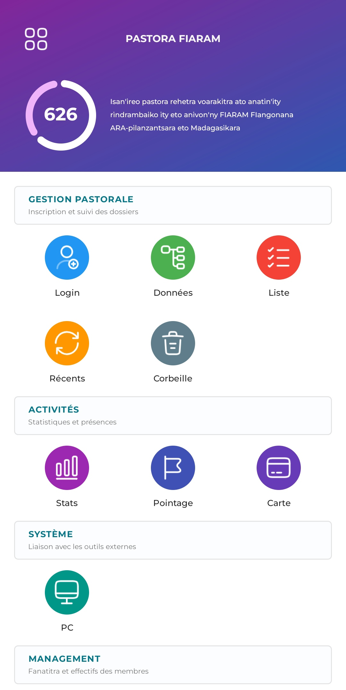
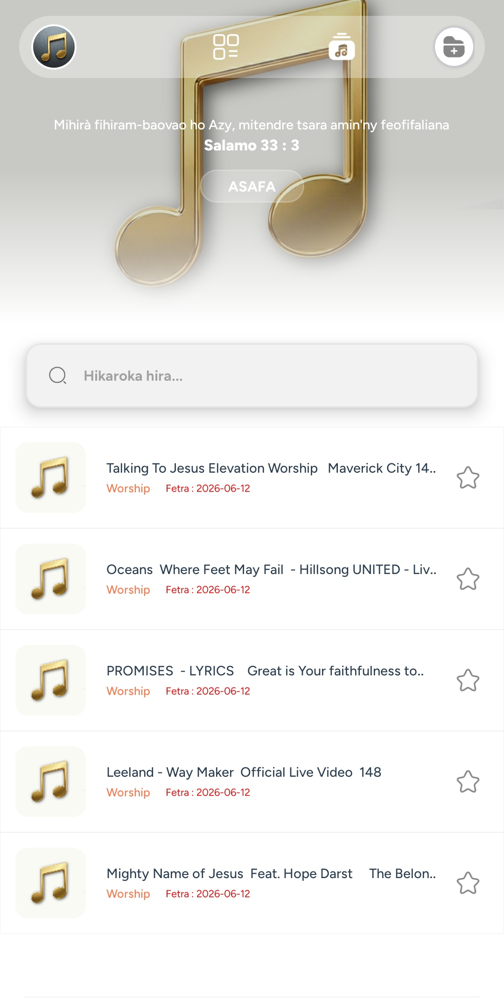
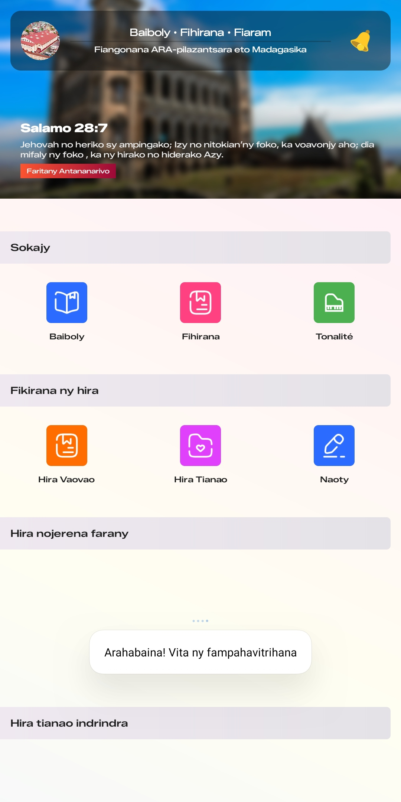
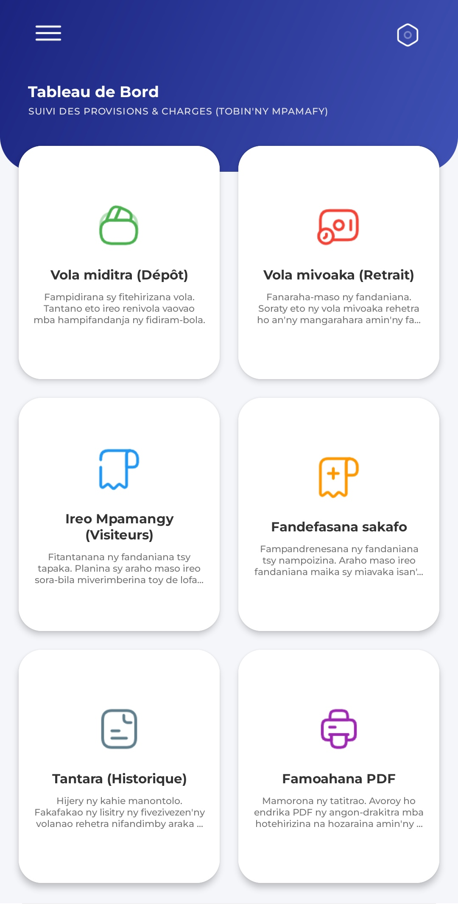
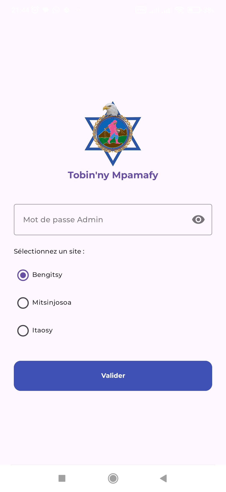
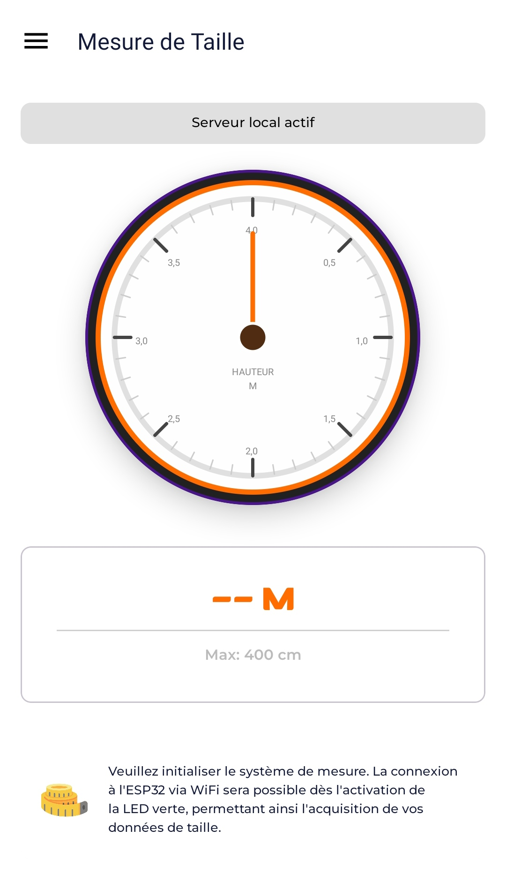
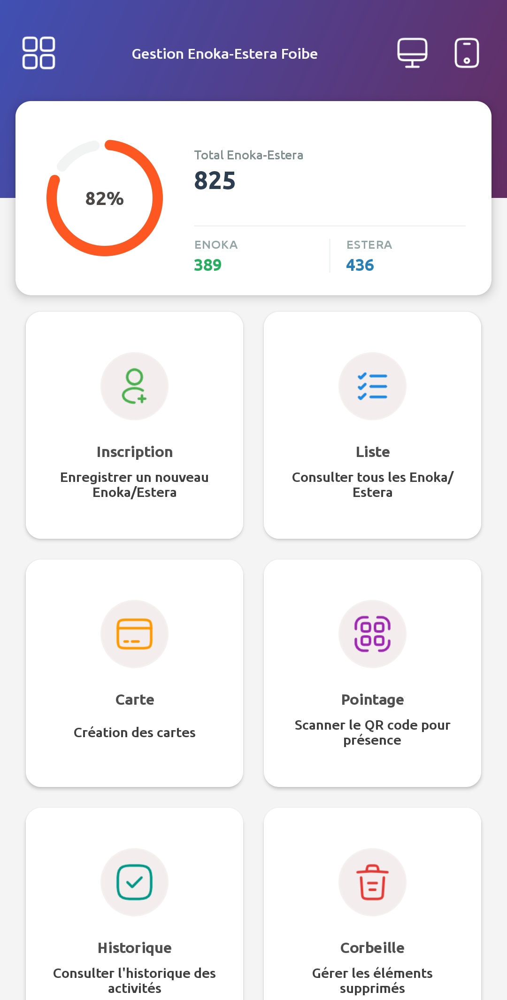
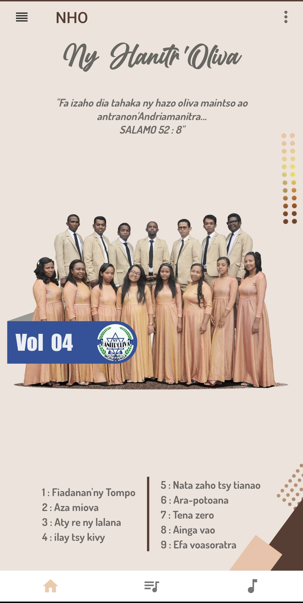
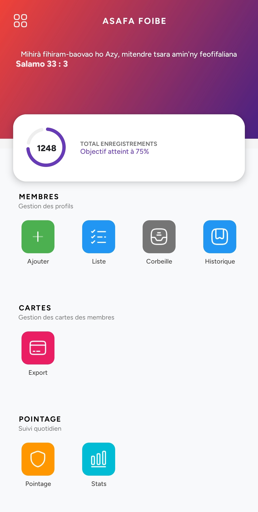

Développeur d'Applications Mobile & Desktop
Développeur Java spécialisé dans la création d'applications axées sur la gestion, la digitalisation et la sécurisation des données avec une expertise centrée sur JavaFX et Android Studio.
Mpamafy Production (FIARAM) | Depuis 2 ans
En poste pour assurer la transition numérique globale de l'organisation. Conception, développement et déploiement de solutions logicielles sur-mesure pour moderniser et sécuriser la gestion des membres ainsi que les flux financiers.

Système hybride de digitalisation et de gestion administrative des mouvements pastoraux. Synchronisation locale sans dépendance internet entre mobile et PC.

Suite écosystème de sécurisation musicale pour Mpamafy Production. AsafaAdministration gère le chiffrement des flux audio côté PC et l'application client décrypte de manière sécurisée.

Application mobile grand public regroupant des recueils de cantiques et une version complète de la Bible fonctionnant 100% hors-ligne.

Solution logicielle gérant le contrôle d'accès des visiteurs de l'établissement et l'automatisation du pointage des services de restauration.

Logiciel d'administration financière multisite permettant le pointage mensuel décentralisé et sécurisé des employés pour le calcul automatique de la paie.

Système connecté IoT combinant matériel microcontrôleur et interface logicielle pour mesurer automatiquement la taille d'une personne avec précision.

Solution logicielle sur-mesure développée pour l'organisation afin de numériser le registre des membres et assurer le suivi dynamique des mouvements.

Suite d'applications musicales distinctes conçues pour structurer, catégoriser et diffuser localement les catalogues de productions spécifiques.

Application mobile d'envergure nationale conçue comme la suite de l'écosystème PastoraApplication, dédiée spécifiquement au recensement, à la cartographie et au suivi du réseau hors-ligne des fils et filles de pasteurs.
Intéressé par mon profil pour un projet de digitalisation, de sécurisation de données ou une opportunité ? N'hésitez pas à me joindre.
📧 Email : danielvahitanomena@gmail.com
📞 Téléphone : +261 34 13 360 13
🌐 GitHub Pro : github.com/Vahitranomena